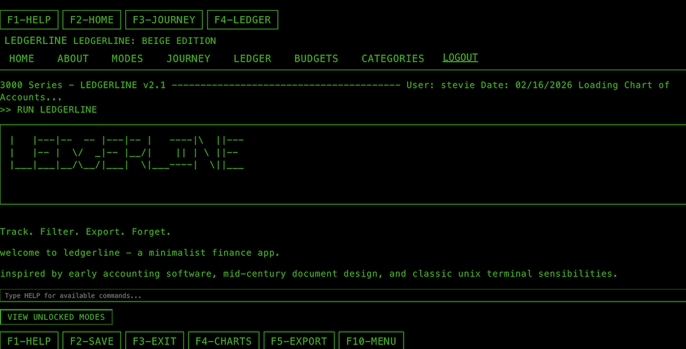
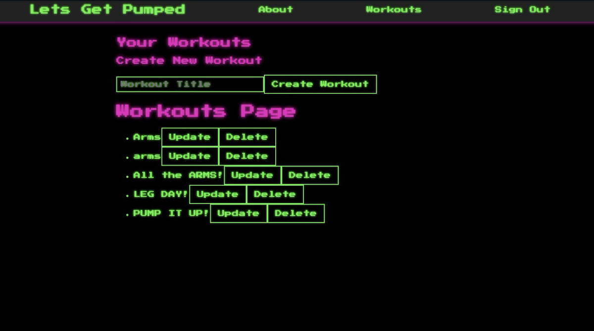
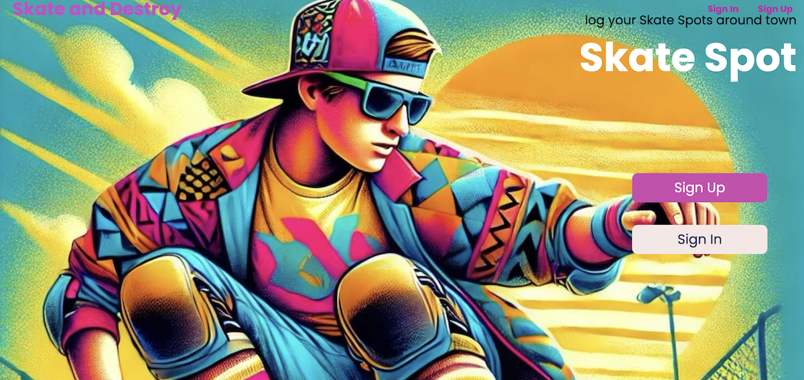
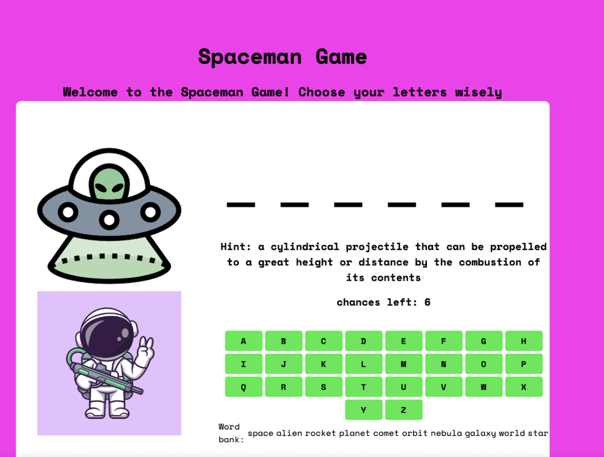

Case Studies
Deep dives into the projects I've built
LedgerLine
Technologies Used
Overview
A personal finance tracker that helps users visualize spending, manage budgets, and track expenses across categories. Built to solve the pain of scattered spreadsheets and unclear financial habits.
Problem
Many people struggle to understand where their money goes. Spreadsheets are tedious to maintain, and generic apps often feel overwhelming or don't fit personal workflows.
Solution
LedgerLine offers a clean, intuitive interface for logging transactions and categorizing spending. Users can set budgets, view trends, and gain clarity on their finances without the friction of manual spreadsheet updates.
Workout App
Technologies Used
Overview
A fitness companion that lets users log workouts, track progress over time, and stay accountable to their goals. Designed to replace paper logs and fragmented tracking across multiple apps.
Problem
Fitness enthusiasts often juggle notes, spreadsheets, and multiple apps to track workouts. There's no single place to log exercises, see progress, and stay motivated.
Solution
This full-stack app provides a unified experience: log workouts, add exercises with sets and reps, and review history. The React frontend and Node/Express backend work together for a smooth, responsive experience.
SkateSpot
Technologies Used
Overview
A community-driven platform for skaters to discover, rate, and share local skate spots. Addresses the challenge of finding new spots and getting reliable info on obstacles, surface quality, and access.
Problem
Skaters rely on word of mouth or random exploration to find spots. Info about obstacles, surface conditions, and whether a spot is skater-friendly is hard to find in one place.
Solution
SkateSpot lets the community contribute spots with descriptions, ratings, and photos. Built with server-side EJS templates and MongoDB, it creates a searchable, shareable database of skate locations.
Spaceman
Technologies Used
Overview
A space-themed word-guessing game (inspired by Hangman) where players uncover letters before running out of guesses. Built to practice DOM manipulation and game logic with vanilla JavaScript.
Problem
Learning JavaScript means building real interactive experiences. A game like Hangman exercises core skills: state management, user input, DOM updates, and win/lose logic.
Solution
Spaceman delivers a playable word game with a retro space aesthetic. Vanilla JS handles all game logic and DOM updates, reinforcing fundamentals without frameworks.